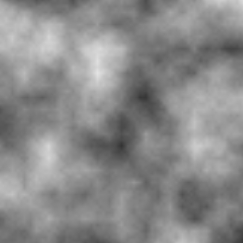
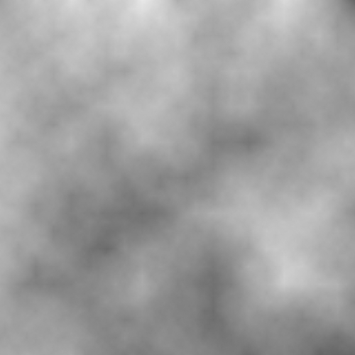

Here are two 500x500 images generated with this library.  This image is generated using the formula (value-noise x/100 y/100 0 5 324).  This image is generated using the formula (value-noise x/200 y/200 0 10 124).